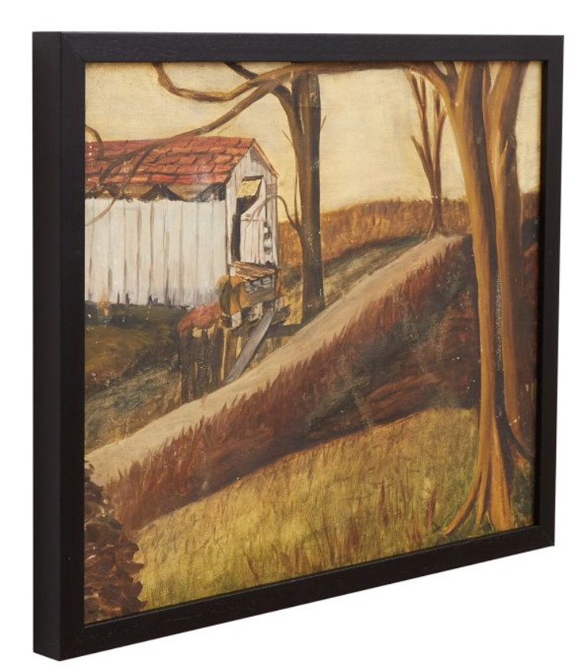

Furniture & Accessories
HISTORY & ARTS
The furniture we believe are within the most representative of the mid-century style. Some of
them made design history.
Mid-century interior design (1940s-1960s) is known for its clean lines, organic shapes, and functional simplicity. It often uses natural materials like wood and leather and features a mix of neutral tones and bold accents. Large windows and open spaces create a seamless indoor-outdoor connection.
Key Features:
Organic/Geometric Shapes: Harmonious blend of forms.
Natural Materials: Wood, leather, metal.
Color Palette: Neutrals with bold accents.
Nature Integration: Large windows, open plans.
Sputnik Light:
The Sputnik light, inspired by the 1957 Soviet satellite, is a hallmark of mid-century design. With its
starburst design and multiple arms, it serves as a dynamic focal point in living rooms, combining aesthetic
appeal with ample lighting. Typically made from metals like brass or chrome, it reinforces the
mid-century modern look.
a Sputnik light fixture enhances a mid-century living room with its striking design, ample lighting, and retro-futuristic charm.
Mid-Century Sputnik Light
Possini Euro Design
- couch

Greyson Couch:
A grey sofa with wooden legs fits perfectly into mid-century interior design. This piece combines key
elements of the style: clean lines, functionality, and the use of natural materials.
Features:
Neutral Color: Grey provides a versatile, neutral base that complements bold accent colors typical of mid-century palettes.
Natural Materials: Wooden legs, often made from teak or walnut, add warmth and an organic touch.
Functional Elegance: Balances comfort with aesthetic appeal, emphasizing usability.
a grey sofa with wooden legs is an ideal choice for a mid-century interior, bringing together simplicity, versatility, and a natural element to the space.
Mid-Century Couch
More Comfort Couch
- round pillow
Blush Velvet Pillow:
Blush velvet pillows, whether round or rectangular, are a stylish addition to mid-century interior
design. They introduce a touch of softness and luxury while complementing the clean lines and
organic materials typical of the style.
Features:
Color Accent: Blush provides a subtle, warm pop of color that enhances the neutral base
common in mid-century design.
Versatility: Suitable for various seating options, these pillows can add visual interest and comfort.
blush velvet pillows offer a luxurious and colorful accent that enriches the mid-century modern aesthetic, balancing clean lines with softness and warmth.
Mid-Century Blush Velvet Pillow
Rectangle Velvet Pillow
- side table
GeoFusion Table:
An end table for mid-century interior design features simplicity, functionality, and natural materials.
Features:
Natural Materials: Often made from wood like teak, walnut, or oak, sometimes combined with metal or glass.
Functional Design: Emphasizes practicality, providing surface space and sometimes storage.
a mid-century end table combines clean lines, natural materials, and functional design, making it a practical and stylish addition to the living space.
Mid-Century End Table
More Antique Table
- clay vase
TerraCraft Vase:
A clay vase is a perfect accessory for mid-century interior design, bringing an organic and artistic element to the space.
Features:
Natural Materials: Clay adds an earthy, tactile quality that aligns with the mid-century emphasis on natural materials.
Neutral and Bold Colors: Available in earthy tones or bold accent colors to complement the mid-century palette.
a clay vase enhances mid-century decor with its natural material, simple shape, and versatile color options, adding both visual and textural interest to the space.
Mid-Century Clay Vase
More types of Clay Vase
- art painting
Amber Gleam Abstract:
An ochre abstract art print is a striking addition to mid-century interior design, providing color and visual interest.
Features:
Artistic Expression: Captures the innovative and experimental art movement of the mid-century era.
Balance and Harmony: Typically designed to create a sense of balance and harmony, aligning
with the overall aesthetic of mid-century interiors.
an ochre abstract art print enriches mid-century interiors with warm hues, modern design, and textural depth, reflecting the era's artistic innovation and balance.

Mid-Century Art Painting
More Orche Painting